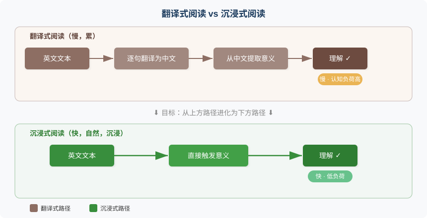
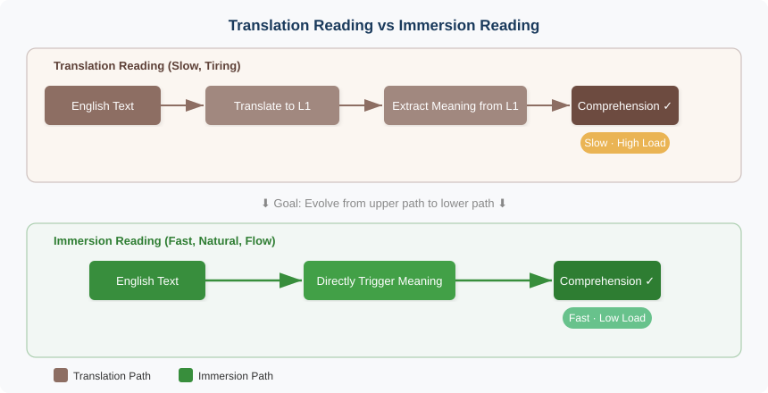

第五章：听与读——把意吸进来
Input: Absorbing Meaning
"We acquire language in only one way — when we understand messages." — Stephen Krashen
核心问题：如何让英文输入直接触发「意」，而不是先翻译成中文？
5.1 一万个单词为什么帮不上忙
Nation（2001）在一项覆盖数千名二语学习者的研究中发现了一个令人不安的事实：词汇量达到一万的学习者中，超过 60% 在真实听力场景中的理解率不到 30%。换句话说，他们认识几乎所有出现的单词，但把这些单词串在一起变成声音流时，理解力骤降。
我自己也经历过这种落差。三年时间，我把词汇量从 3000 刷到了 12000。英文文献的阅读正确率稳定在 85% 以上，同事们都说我英语底子不错。直到有一天关掉字幕看了一集美剧，才发现这一万个单词几乎帮不上忙。
不是词不认识。屏幕上蹦出来的词我大部分都背过。问题出在速度。听到 "fair enough"，大脑启动搜索流程：fair → 公平、enough → 足够 → "公平足够" → 不通 → 也许是"好吧"？还没想明白，对话已经往前走了三句。听到 "you're out of your depth"，大脑再次启动：out → 外面、depth → 深度 → "你在你的深度外面" → 不通……又错过了两句。
整集看完，我大概理解了 20% 的剧情，还是靠画面猜的。
那天晚上我想明白了一件事。三年、一千天、一万两千个单词，我的问题不是词汇量不够，而是每一个英文单词都以「中文标签」的方式存储。听到英文，大脑不是在理解，是在翻译。翻译的速度永远追不上语流的速度。
输入从未直接触发「意」。
5.2 Krashen 的遗产与修正：可理解输入的真相
关于语言输入，绕不开一个人：Stephen Krashen。
1985 年，Krashen 提出了输入假说（Input Hypothesis）。核心主张简洁有力：语言习得发生在学习者理解了略高于当前水平的输入时。他用一个公式概括，i+1。i 是你当前的语言水平，+1 是刚好超出一点的新内容。理解了这个 +1，习得自然发生。
Krashen 说对了什么？大量可理解输入确实是语言习得的基础。 几十年的研究反复确认了这一点。无论用什么教学法、什么技术手段，学习者没有接触到足够量的可理解输入，语言能力就不会实质性提升。这份贡献是奠基性的。
但他没说清楚一件事：不是所有输入都平等。
他的理论暗含一个假设，只要输入可理解，习得就会自动发生。这过于乐观了。你可以在飞机上听八小时英文广播，下飞机时英语水平纹丝不动。被动地让英文声音流过耳膜，不等于习得。
VanPatten（2004）的输入加工理论（Input Processing Theory）补上了这块拼图。他追问了一个 Krashen 没有回答的问题：学习者在接收输入时，大脑到底在做什么？他的研究揭示，学习者会用一系列认知策略从输入中提取语言形式，并将其映射到意义上。这个映射过程不是自动的，它受注意力分配、加工能力和已有知识结构的制约。
这就引出了本章的核心洞察：
有效输入不是"听到英文"或"看到英文"，而是"英文直接触发了意"。
读到 "The morning light slanted through the curtains"，如果大脑直接浮现出一幅画面（清晨的光线斜斜穿过窗帘），那就是有效输入。英文直接触发了意。但如果大脑先把它翻译成"早晨的光线斜着穿过窗帘"，再从中文句子中提取画面，那你处理的不是英文输入，而是中文输入。英文只是一个需要解码的密码，中文才是你真正在"读"的语言。
Nation 的研究数据印证了这一点。那些词汇量过万却听不懂真实对话的学习者，他们的每一个单词都是一把需要用中文钥匙才能打开的锁。输入的大门看似敞开，实际上挤满了翻译的瓶颈。
5.3 阅读：沉浸式吸收意的最佳通道
在所有输入方式中，阅读是建立「英文→意」直连的最佳起点。
速度可控。 听力是一列不等人的火车，说话者的语速就是你的加工速度。阅读不一样，你握着速度旋钮：可以快读、慢读、停下来、回看。大脑有足够时间完成从英文到意的映射，不会被语流冲走。
信息密度高。 同样十分钟，阅读能接触到的词汇量远超听力。一篇 2000 词的文章你可能十分钟读完，听完同样内容的音频需要十五到二十分钟。更密集的信息意味着更密集的「英文→意」映射练习。
材料可选择。 你可以精准地选择匹配自己水平的材料，既不太简单（无聊，无新输入），也不太难（挫败，退回翻译模式）。
Nation（2001）对广泛阅读（Extensive Reading）的研究给出了一个关键数字：98% 已知词汇覆盖率是"舒适阅读"的门槛。每 50 个词里最多只有 1 个生词，你才能不借助字典、不翻译，纯粹从语境中推断意义。低于这个门槛？阅读变成查字典的苦差事，翻译模式自动启动。
Nation 还发现了一个振奋人心的现象：广泛阅读能带来附带词汇习得（Incidental Vocabulary Learning）。不需要刻意背单词。当一个生词在不同语境中反复出现 6-12 次后，大脑自动完成从语境到意义的映射。而且这种习得方式建立的连接是「英文→意」的直连，因为你是从英文语境中理解这个词的，中文从未介入。
不翻译阅读法
基于以上研究，这里提出一个核心策略：不翻译阅读法。规则只有四条。
一、选择略低于你能力的材料。 注意，不是 Krashen 说的 i+1，而是 i-1 或 i。为什么？目标不是学新词，而是训练直连。材料太难，大脑被迫退回翻译模式；材料略简单，大脑才有余力从翻译通路切换到直连通路。
二、不查字典，不翻译。 遇到不认识的词，根据上下文猜测。猜不出？跳过去。目标不是「全懂」，而是「让意流动起来」。让英文文本在你脑中持续触发画面、情感、逻辑判断，中间不插入中文。
三、持续阅读，不要停下来分析。 一旦你停下来想"这个句子的语法结构是什么"，你就从沉浸模式切换到了分析模式，直连练习中断。分析可以留到读完之后。
四、逐渐提高难度。 当某个难度的材料读起来毫不费力，英文直接在脑中生成画面，不需要任何翻译，就该升级了。
推荐的材料梯度如下：
| 阶段 | 材料 | 特点 |
|---|---|---|
| 入门 | Graded Readers（分级读物） | 词汇量严格控制，语法简化 |
| 进阶 | 简化版经典（如 Penguin Readers） | 原著故事，简化语言 |
| 中级 | 当代畅销小说 | 自然语言，情节驱动 |
| 高级 | 非虚构（科普、传记、历史） | 逻辑密度更高，术语增加 |
| 专业 | 学术文本、行业文献 | 领域专用词汇，长句复杂句 |
下图展示了「翻译式阅读」和「沉浸式阅读」在认知流程上的根本差异：

翻译式阅读走三步：英文→中文→意。沉浸式阅读走两步：英文→意。少一步，不只是快一点，它释放出来的认知资源让你能同时追踪情节、感受情感、预测走向。这就是母语阅读让你"沉浸"而翻译式阅读让你"疲惫"的根本原因。
5.4 听力：从声音到意的直接映射
如果说阅读是建立直连的温室，听力就是旷野。同样是输入，听力建立直连的难度显著高于阅读。
速度不可控。 说话者不会等你。正常英语语速每分钟 150-180 个词，日常对话中连带语气词和重复可能更快。没有暂停键，没有回看功能，错过就错过了。
语音变形。 书面英文和口语英文是两种东西。连读（Linking）、弱读（Weak Forms）、吞音（Elision）、同化（Assimilation），这些连接语音现象（Connected Speech）让你背过的单词在声音流中面目全非。"Want to" 变成 "wanna"，"going to" 变成 "gonna"，"I would have" 变成 "I'd've"。你在纸上认识的词，在耳朵里可能完全陌生。
工作记忆压力更大。 阅读时，文字就在那里，你可以反复看。听力时，声音转瞬即逝，你必须在工作记忆中临时存储刚听到的内容，同时加工新进入的声音。这对工作记忆的压力远大于阅读。
Field（2008）在《课堂听力》中提出了一个重要的听力加工模型。真实的听力理解是自底向上（Bottom-Up）和自顶向下（Top-Down）两个过程的交互。自底向上是从声音到意：辨别音素→识别单词→解析句法→提取意义。自顶向下是从预期到声音：利用话题知识、语境线索和文化背景来预测和补全听到的内容。
母语者两条路径同时高速运转，互相补位。漏听了一个词？自顶向下的预测帮你补上。不认识一个表达？语境和话题知识帮你推断。但对于翻译式听者来说，自底向上的路径已经被翻译过程堵死了。你还在翻译上一句，下一句已经进来了，自顶向下的预测也无从启动。
三阶段听力训练法
基于这个模型，这里提出三阶段递进的训练方法。
第一阶段：精听（Intensive Listening）。 选一段 30 秒到 1 分钟的材料（TED 片段、播客节选、电影对白），反复听 5-10 遍，每遍聚焦不同层次：
| 遍次 | 聚焦层次 | 目标 |
|---|---|---|
| 第 1-2 遍 | 语音 | 辨别连读、弱读、吞音，把"声音流"拆解为单词 |
| 第 3-4 遍 | 词组 | 识别组块（Chunks），注意搭配和固定短语 |
| 第 5-6 遍 | 句意 | 不翻译，直接从英文提取每句话的意 |
| 第 7-8 遍 | 整体意 | 放下细节，感受整段话的信息流和论证逻辑 |
| 第 9-10 遍 | 文化语境 | 注意语气、态度、言外之意、文化预设 |
精听的价值不在于"听懂了多少"，而在于训练大脑在声音层面建立直连，让特定的声音模式直接激活意，绕过中文。
第二阶段：泛听（Extensive Listening）。 大量听可理解的材料，不追求 100% 听懂。目标是让大脑习惯英文语音流的节奏、韵律和信息密度。就像学游泳不能只在岸上分析动作，你得跳进水里，让身体适应水的存在。泛听就是跳进英文声音的海洋。
选择的材料应该让你能理解 70-80%。太简单没有新输入，太难会退回翻译模式。听的时候不暂停、不回放、不查词。让声音流过去，能懂多少算多少。
第三阶段：意象听力。 这是最关键的一步。听的时候，在脑中构建画面，不翻译成中文。听到 "a cat sitting on the windowsill"，不要想"一只猫坐在窗台上"，而是直接看到那只猫：阳光里，窗台上，蜷缩着，尾巴垂下来。听到 "the crowd erupted in cheers"，不想中文，直接听到欢呼声、看到人群沸腾的画面。
意象听力的本质是什么？用画面和感觉作为「意」的载体，替代中文作为中介。英文声音→画面/感觉，而不是英文声音→中文→画面/感觉。这条通路一旦建立，听力理解的速度将发生质变。
推荐的材料梯度：
| 阶段 | 材料 | 特点 |
|---|---|---|
| 入门 | Slow English Podcasts（如 6 Minute English） | 语速慢，词汇简单，话题日常 |
| 进阶 | TED Talks | 语速适中，逻辑清晰，有字幕辅助 |
| 中级 | NPR / BBC 新闻播客 | 自然语速，信息密度高 |
| 高级 | 美剧 / 电影 | 连接语音密集，俚语多，情感丰富 |
| 专业 | 学术讲座 / 行业会议 | 术语密集，长段论证 |
5.5 输入的质量比数量重要
"多听多读"，几乎每一本英语学习书都会给出这个建议。方向没错，但这四个字太粗糙了。它暗示输入是均质的，好像一小时《老友记》和一小时随机英文广播等值。真的等值吗？
有效输入需要同时满足三个条件。
条件一：可理解
至少能理解 70% 以上的内容。低于这个门槛，大脑的加工资源全部被消耗在解码上，没有余力建立直连。你不是在"吸收意"，而是在"破译密码"。破译和吸收是完全不同的认知活动。
条件二：有意义
内容是你真正关心的，不是"为了学英语而读/听"的材料。这个条件经常被忽视，但它至关重要。假设你是程序员，在读一篇关于分布式系统的英文博客。你的注意力自然聚焦在内容上，英文只是获取内容的透明管道。此时「英文→意」的直连在无意中被强化。反过来，读一篇你毫无兴趣的"英语阅读理解练习"，注意力聚焦在"做对题目"上，英文成了需要破解的障碍物。直连无法建立。
条件三：有情感
能触发你的情感反应，好奇、惊讶、愤怒、感动、幽默。为什么情感如此重要？因为情感是「意」的核心组成部分。第二章论证过，「意」是多模态的心智表征（Mental Representation），其中情感维度不可或缺。读到一个故事结局时鼻子发酸，听到一个笑话时噗嗤一笑，此刻英文和意之间的连接最强，因为情感充当了粘合剂。
神经科学的证据支持这一点。杏仁核（Amygdala）在情感激活时会增强海马体（Hippocampus）的记忆编码功能。带情感的输入，记忆效果显著强于中性输入。
Csikszentmihalyi（1990）的心流（Flow）理论从另一个角度印证了这三个条件。他发现，当任务难度与技能水平匹配、任务目标清晰、反馈即时时，人会进入一种高度专注又毫不费力的状态。在心流状态中，自我意识消失，时间感改变，学习效率达到峰值。
把这个框架映射到英语输入：材料难度匹配你的水平（可理解），内容吸引你（有意义），还能触发你的情感（有情感），你最有可能进入阅读或听力的心流状态。此时你不再意识到自己在"学英语"，你只是在享受一个故事、理解一个观点、追踪一个论证。英文变成了透明的。
这正是直连通路被最高效地建立的时刻。
5.6 🔬 语言实验：一周不翻译阅读挑战
这个实验只需要一本书和七天时间。
准备： 选一本你感兴趣的英文小说或非虚构书。关键标准：95% 以上的词你认识。不确定的话，随机翻开三页，每页生词不超过两三个就够了。推荐起步材料：《Charlotte's Web》（简单但优美）、《The Giver》（适合中级）、《Sapiens》（适合高级非虚构读者）。
规则只有一条：不查字典，不翻译。
执行方式： 每天读 30 分钟。遇到不认识的词，根据上下文猜测它大概的意思。猜不出来？跳过去。不要停下来，不要打断意的流动。目标不是"读懂每一个词"，而是让英文持续地在你脑中生成画面、情感和逻辑。
每天读完后，做一个简单的自我观察：
| 观察项 | 第1天 | 第3天 | 第7天 |
|---|---|---|---|
| 读的时候脑中有中文吗？ | |||
| 英文是否直接触发了画面？ | |||
| 遇到生词时会焦虑吗？ | |||
| 能否持续阅读不中断？ |
一周后回顾： 你是否开始"直接看到"英文描述的画面，而不是先翻译成中文？如果第一天满脑子中文，第七天画面开始自动浮现，恭喜，你的直连通路正在建立。那些跳过去的生词，你可能会发现，有些在反复出现后你已经"感觉到"了它们的意思，虽然你说不出精确的中文释义。
这种"说不出中文释义但知道它是什么意思"的状态，恰恰证明你建立的是直连，而不是翻译。
5.7 总结与过渡
本章的核心论点：有效的英文输入不是"听到/看到英文"，而是"英文直接触发了意"。
三条关键策略：
- 不翻译阅读法：选择略低于能力的材料，不查字典，让意在英文中自由流动
- 意象听力：听的时候构建画面和感觉，用多模态的意替代中文中介
- 选择有意义、有情感的材料：让心流成为直连建立的加速器
Krashen 说得对，大量可理解输入是基础。但输入的目标不只是"理解内容"，而是"训练大脑从英文直接到达意"。每一次不翻译的阅读、每一次直接生成画面的听力，都在强化那条直连通路。
输入解决的是"吸收"问题，把意从外部世界吸进你的认知系统。但语言不能只进不出。当你想表达一个想法、一种感受、一个判断时，那个在脑中翻涌的意，如何直接以英文流出，而不是先凝固为中文再翻译？
这是输出的问题。第六章，我们翻转方向，从吸收转向表达。
参考文献
-
Krashen, S. D. (1985). The Input Hypothesis: Issues and Implications. London: Longman. — 提出输入假说（i+1），论证可理解输入是语言习得的核心驱动力，奠定了输入导向教学法的理论基础。
-
Nation, I. S. P. (2001). Learning Vocabulary in Another Language. Cambridge: Cambridge University Press. — 系统论述二语词汇习得机制，提出 98% 词汇覆盖率阈值和附带词汇习得理论，为广泛阅读策略提供实证依据。
-
VanPatten, B. (2004). Input Processing in Second Language Acquisition. In B. VanPatten (Ed.), Processing Instruction: Theory, Research, and Commentary (pp. 5–31). Lawrence Erlbaum. — 提出输入加工理论，揭示学习者如何从输入中提取语言形式并映射到意义，补充了 Krashen 理论的加工机制空白。
-
Field, J. (2008). Listening in the Language Classroom. Cambridge: Cambridge University Press. — 深入分析听力理解的认知加工过程，提出自底向上与自顶向下交互模型，为听力教学策略提供科学框架。
-
Csikszentmihalyi, M. (1990). Flow: The Psychology of Optimal Experience. New York: Harper & Row. — 提出心流理论，论证技能-挑战匹配状态下的最优体验和高效学习，启发了本章关于输入质量的三条件框架。
-
Schmitt, N. (2008). Review article: Instructed second language vocabulary learning. Language Teaching Research, 12(3), 329–363. — 综述二语词汇教学研究，确认广泛阅读中附带词汇习得的有效性，支持"多次语境接触"的习得路径。
Chapter 5: Input — Absorbing Meaning
"We acquire language in only one way — when we understand messages." — Stephen Krashen
Core question: How can English input directly trigger yì (pre-linguistic meaning-intention) instead of being translated into Chinese first?
5.1 Why Ten Thousand Words Don't Help
Nation (2001), in a study covering thousands of second-language learners, uncovered a disquieting fact: among learners with a vocabulary of ten thousand words, over 60% understood less than 30% of real spoken English. Put differently, they recognized almost every word that appeared, but when those words were strung together into a stream of speech, comprehension collapsed.
I've lived through that gap myself. Over three years, I pushed my vocabulary from 3,000 to 12,000. My reading accuracy on English technical papers stayed reliably above 85%, and colleagues told me my English was solid. Then one evening I turned off the subtitles and watched an episode of an American TV show. That's when I discovered those twelve thousand words were nearly useless.
It wasn't that I didn't know the words. Most of what I heard I'd studied. The problem was speed. When I heard "fair enough," my brain launched a search: fair → fair, enough → sufficient → "fair sufficient"? Doesn't work → retry → maybe "okay"? Before I'd figured it out, the dialogue had moved on three lines. When I heard "you're out of your depth," my brain started again: out → outside, depth → depth → "you're outside your depth"? Doesn't work... another two lines gone.
By the end of the episode, I'd grasped roughly 20% of the plot, mostly from the visuals.
That night I understood something. Three years, a thousand days, twelve thousand words, and my problem wasn't a lack of vocabulary. It was that every single English word was stored as a "Chinese label." When I heard English, my brain wasn't comprehending; it was translating. And translation can never keep pace with the flow of speech.
Input had never directly triggered yì.
5.2 Krashen's Legacy and Its Revision: The Truth About Comprehensible Input
When it comes to language input, one name is unavoidable: Stephen Krashen.
In 1985, Krashen proposed the Input Hypothesis. Its core claim is simple and powerful: language acquisition occurs when learners understand input slightly above their current level. He summarized it as i+1: i is your current proficiency, and +1 is new material that stretches you just a bit. Understand that +1, and acquisition happens naturally.
What did Krashen get right? Massive amounts of comprehensible input are indeed the foundation of language acquisition. Decades of research have confirmed this. Regardless of method or technique, if learners don't receive enough comprehensible input, their ability won't meaningfully improve. That contribution is foundational.
But he left something underspecified: not all input is equal.
His theory implies that as long as input is comprehensible, acquisition will follow automatically. That's overly optimistic. You can listen to English radio for eight hours on a flight and step off with your English unchanged. Letting English sounds wash passively over your eardrums isn't the same as acquisition.
VanPatten's (2004) Input Processing Theory fills this gap. He asked a question Krashen never answered: what is the brain actually doing when a learner receives input? His work showed that learners use cognitive strategies to extract linguistic form from input and map it onto meaning. That mapping isn't automatic. It's constrained by attention, processing capacity, and existing knowledge structures.
This leads to the central insight of this chapter:
Effective input is not "hearing English" or "seeing English," but "English directly triggering yì."
When you read "The morning light slanted through the curtains," if your mind immediately forms a scene (early light slanting through curtains), that's effective input. English directly triggered yì. But if your mind first translates the sentence into Chinese and then builds the scene from the Chinese version, you aren't processing English input. You're processing Chinese. English is just a code to be decoded; Chinese is the language you're actually "reading."
Nation's research data confirms this. Those learners with ten-thousand-word vocabularies who still couldn't understand real conversation had stored every word as a lock requiring a Chinese key. The door of input seemed wide open, but the doorway was choked with translation.
5.3 Reading: The Best Path to Immersively Absorbing Yì
Of all input channels, reading is the best starting point for building a direct English-to-yì connection.
Speed is under your control. Listening is a train that won't wait; the speaker's pace is your processing pace. Reading is different. You hold the speed knob: speed up, slow down, pause, look back. Your brain gets enough time to complete the mapping from English to yì without being swept away by the stream of speech.
Information density is higher. In the same ten minutes, reading exposes you to far more vocabulary than listening. A 2,000-word article might take ten minutes to read; the same content as audio often needs fifteen to twenty. Higher density means more practice at the English-to-yì mapping.
Materials are selectable. You can choose texts closely matched to your level: not too easy (boring, no new input) and not too hard (frustrating, forcing a retreat into translation mode).
Nation's (2001) work on extensive reading yields a crucial threshold: 98% known vocabulary coverage is the gate to "comfortable reading." That means at most one unknown word in fifty, so you can infer meaning from context without dictionaries or translation. Below that threshold, reading becomes a chore of constant look-ups, and translation mode kicks in automatically.
Nation also documented a heartening effect: extensive reading fosters incidental vocabulary learning. You don't need to drill words deliberately. When an unknown word appears 6 to 12 times across different contexts, the brain automatically maps context to meaning. And this kind of learning builds a direct English-to-yì link, because understanding emerges from English context with no Chinese in between.
The No-Translation Reading Method
From this research flows a core strategy: the No-Translation Reading Method. Four rules only.
One: choose material slightly below your ability. Not Krashen's i+1, but i-1 or i. Why? Your aim isn't to learn new words; it's to train the direct pathway. Material that's too hard pushes the brain back into translation; slightly easier material leaves spare capacity to switch from the translation route to the direct route.
Two: no dictionary, no translation. When you meet an unknown word, guess from context. Can't guess? Skip it. The goal isn't "understand everything" but "let yì flow." Let the English text continuously trigger images, feelings, and logic in your mind, with no Chinese inserted.
Three: read continuously, don't stop to analyze. The moment you pause to think "what's the grammatical structure of this sentence," you leave immersion mode and enter analysis mode, and direct-path practice is interrupted. Analysis can wait until after reading.
Four: gradually increase difficulty. When material at a given level feels effortless, when English directly generates images in your mind with no translation needed, it's time to move up.
Recommended material ladder:
| Stage | Material | Characteristics |
|---|---|---|
| Starter | Graded Readers | Strict vocabulary control, simplified grammar |
| Intermediate | Simplified classics (e.g., Penguin Readers) | Original stories, simplified language |
| Mid-level | Contemporary bestsellers | Natural language, plot-driven |
| Advanced | Non-fiction (popular science, biography, history) | Higher logical density, more terminology |
| Expert | Academic and professional texts | Domain-specific vocabulary, long complex sentences |
The diagram below contrasts "translation-mode reading" and "immersive reading" at the cognitive level:

Translation-mode reading takes three steps: English → Chinese → yì. Immersive reading takes two: English → yì. One fewer step isn't just a bit faster. The freed cognitive resources let you follow plot, feel emotion, and anticipate direction at the same time. That's why reading in your first language feels immersive while translation-mode reading feels exhausting.
5.4 Listening: Direct Mapping from Sound to Yì
If reading is the greenhouse for building direct connections, listening is the open field. Both are input, but building direct connections through listening is significantly harder.
Speed isn't under your control. The speaker won't wait. Normal English runs 150 to 180 words per minute; casual conversation with fillers and repetition can be faster. There's no pause, no replay. Miss it and it's gone.
Phonological variation. Written and spoken English are different animals. Linking, weak forms, elision, assimilation: these connected-speech phenomena can make familiar words unrecognizable in the sound stream. "Want to" becomes "wanna," "going to" becomes "gonna," "I would have" becomes "I'd've." Words you know on the page can be strangers to your ears.
Higher working-memory load. In reading, the text stays put and you can reread. In listening, sound vanishes in an instant. You must hold what you just heard in working memory while processing new incoming sound. The load on working memory is far greater.
Field (2008), in Listening in the Language Classroom, proposes an important model of listening comprehension. Real understanding is the interplay of bottom-up and top-down processing. Bottom-up moves from sound to meaning: distinguish phonemes, identify words, parse syntax, extract meaning. Top-down moves from expectation to sound: use topic knowledge, context cues, and cultural background to predict and fill in what you hear.
For native speakers, both paths run at high speed in parallel, supporting each other. Miss a word? Top-down prediction fills it in. Unfamiliar expression? Context and topic knowledge help you infer. But for a translation-mode listener, the bottom-up path is clogged by the translation process. You're still translating the last sentence when the next one arrives, and top-down prediction never gets a chance to engage.
Three-Phase Listening Training
From this model comes a three-phase progression.
Phase 1: Intensive Listening. Choose a 30-second to 1-minute segment (TED clip, podcast excerpt, film dialogue). Listen 5 to 10 times, each pass focusing on a different layer:
| Pass | Focus | Goal |
|---|---|---|
| 1–2 | Phonetics | Notice linking, weak forms, elision; segment the "sound stream" into words |
| 3–4 | Phrases | Identify chunks; notice collocations and fixed expressions |
| 5–6 | Sentence meaning | No translation; extract each sentence's yì directly from English |
| 7–8 | Overall meaning | Set aside detail; follow the flow of information and argument |
| 9–10 | Cultural context | Notice tone, attitude, implications, cultural presuppositions |
The value of intensive listening isn't "how much you understood" but training the brain to build direct connections at the sound level: letting specific sound patterns directly activate yì, bypassing Chinese.
Phase 2: Extensive Listening. Listen to large amounts of comprehensible material without aiming for 100% comprehension. The goal is to let the brain adapt to the rhythm, prosody, and information density of English speech. Like learning to swim: you can't stay on shore analyzing strokes. You have to jump in. Extensive listening is jumping into the ocean of English sound.
Material should let you understand about 70 to 80%. Too easy gives no new input; too hard pushes you back into translation mode. Don't pause, don't rewind, don't look up words. Let the sound flow; comprehend what you can.
Phase 3: Imagery Listening. This is the critical step. While listening, build images in your mind without translating to Chinese. Hear "a cat sitting on the windowsill," and don't think the Chinese equivalent. Instead, see that cat: in the sunlight, on the sill, curled up, tail hanging down. Hear "the crowd erupted in cheers," and don't reach for Chinese. Directly hear the roar and see the crowd surging.
Imagery listening means using images and sensations as carriers of yì instead of using Chinese as mediator. English sound → image/sensation, not English sound → Chinese → image/sensation. Once this pathway is established, listening comprehension speed changes qualitatively.
Recommended material ladder:
| Stage | Material | Characteristics |
|---|---|---|
| Starter | Slow English podcasts (e.g., 6 Minute English) | Slow speech, simple vocabulary, everyday topics |
| Intermediate | TED Talks | Moderate pace, clear logic, optional subtitles |
| Mid-level | NPR / BBC news podcasts | Natural pace, high information density |
| Advanced | US TV shows / films | Dense connected speech, slang, rich emotion |
| Expert | Academic lectures / industry conferences | Terminology-heavy, long arguments |
5.5 Input Quality Matters More Than Quantity
"Listen more, read more." Almost every English-learning book gives this advice. The direction is right, but the advice is crude. It implies input is uniform, as if an hour of Friends equals an hour of random English radio. It doesn't.
Effective input must meet three conditions at once.
Condition 1: Comprehensible
You need to understand at least 70% of the content. Below that, processing resources are fully consumed by decoding, and there's no capacity left to build direct connections. You aren't "absorbing yì"; you're "cracking a code." Decoding and absorbing are different cognitive activities.
Condition 2: Meaningful
The content genuinely interests you. It's not material chosen "to practice English." This condition is often overlooked but it's crucial. Suppose you're a programmer reading a blog post about distributed systems in English. Your attention naturally focuses on the content; English is a transparent conduit. The English-to-yì pathway gets strengthened without intention. Now flip it: you're reading an "English reading comprehension exercise" that bores you. Attention focuses on "getting the answers right," and English becomes an obstacle. Direct connections can't form.
Condition 3: Affective
The input triggers an emotional response: curiosity, surprise, anger, being moved, humor. Why does affect matter so much? Because affect is central to yì. As argued in Chapter 2, yì is a multimodal mental representation in which the emotional dimension is essential. When your nose tingles at a story's ending, when you laugh at a joke, the link between English and yì is strongest because emotion acts as glue.
Neuroscience supports this. The amygdala enhances hippocampal memory encoding when affect is engaged. Emotionally laden input is remembered far better than neutral input.
Csikszentmihalyi's (1990) Flow theory echoes these conditions from another angle. He found that when task difficulty matches skill level, goals are clear, and feedback is immediate, people enter a state of intense focus with minimal effort. In flow, self-awareness fades, sense of time shifts, and learning efficiency peaks.
Map this onto English input: when material difficulty matches your level (comprehensible), content engages you (meaningful), and triggers emotion (affective), you're most likely to enter flow while reading or listening. You no longer feel you're "learning English." You're enjoying a story, grasping an idea, following an argument. English becomes transparent.
That's when the direct pathway is built most efficiently.
5.6 Language Experiment: One-Week No-Translation Reading Challenge
This experiment requires one book and seven days.
Preparation: Choose an English novel or non-fiction book that interests you. Key criterion: you know at least 95% of the words. If unsure, open three random pages; if each page has no more than two or three unknown words, you're good. Suggested starters: Charlotte's Web (simple and beautiful), The Giver (intermediate), Sapiens (advanced non-fiction).
One rule: no dictionary, no translation.
Procedure: Read 30 minutes a day. When you meet an unknown word, guess its approximate meaning from context. Can't guess? Skip it. Don't stop; don't interrupt the flow of yì. Your goal isn't "understand every word" but to let English continuously generate images, emotion, and logic in your mind.
After each day's reading, make a simple self-observation:
| Observation | Day 1 | Day 3 | Day 7 |
|---|---|---|---|
| Was there Chinese in your mind while reading? | |||
| Did English directly trigger images? | |||
| When you hit unknown words, did you feel anxious? | |||
| Could you read continuously without stopping? |
After one week, reflect: Have you begun to "directly see" the scenes English describes instead of translating into Chinese first? If on Day 1 your mind was full of Chinese and by Day 7 images started arising on their own, congratulations: your direct pathway is forming. Some of the words you skipped may, after repeated exposure, already convey a sense of meaning to you, even if you can't provide a precise Chinese definition.
That state, "can't give a Chinese definition but know what it means," is precisely proof that you're building direct connections, not translation.
5.7 Summary and Transition
This chapter's central claim: Effective English input is not "hearing/seeing English" but "English directly triggering yì."
Three strategies:
- No-Translation Reading Method: choose material slightly below your ability, no dictionary, let yì flow freely in English
- Imagery Listening: build images and sensations while listening; use multimodal yì instead of Chinese mediation
- Select meaningful, affective material: let flow accelerate the building of direct connections
Krashen was right: massive comprehensible input is the foundation. But the aim of input isn't only "understand content"; it's "train the brain to reach yì directly from English." Every no-translation reading session, every listening session that directly generates images, reinforces that direct pathway.
Input addresses absorption: bringing yì from the outside world into your cognitive system. But language can't only flow in. When you want to express an idea, a feeling, a judgment, how does that yì stirring in your mind flow out directly in English, instead of solidifying into Chinese first and then being translated?
That's the problem of output. Chapter 6 turns the direction around, from absorption to expression.
References
-
Krashen, S. D. (1985). The Input Hypothesis: Issues and Implications. London: Longman. Introduces the Input Hypothesis (i+1), arguing that comprehensible input is the core driver of language acquisition and laying the theoretical foundation for input-oriented pedagogy.
-
Nation, I. S. P. (2001). Learning Vocabulary in Another Language. Cambridge: Cambridge University Press. Systematic treatment of second-language vocabulary acquisition; proposes the 98% vocabulary coverage threshold and incidental vocabulary learning theory; provides empirical support for extensive reading strategies.
-
VanPatten, B. (2004). Input Processing in Second Language Acquisition. In B. VanPatten (Ed.), Processing Instruction: Theory, Research, and Commentary (pp. 5–31). Lawrence Erlbaum. Proposes Input Processing Theory; describes how learners extract linguistic form from input and map it onto meaning; fills the processing-mechanism gap in Krashen's theory.
-
Field, J. (2008). Listening in the Language Classroom. Cambridge: Cambridge University Press. Detailed analysis of the cognitive processes of listening comprehension; proposes the bottom-up and top-down interaction model; offers a scientific framework for listening pedagogy.
-
Csikszentmihalyi, M. (1990). Flow: The Psychology of Optimal Experience. New York: Harper & Row. Proposes flow theory; argues for optimal experience and efficient learning when skill and challenge are matched; inspires this chapter's three-condition framework for input quality.
-
Schmitt, N. (2008). Review article: Instructed second language vocabulary learning. Language Teaching Research, 12(3), 329–363. Reviews instructed second-language vocabulary research; confirms effectiveness of incidental vocabulary learning in extensive reading; supports the "multiple contextual exposures" acquisition path.